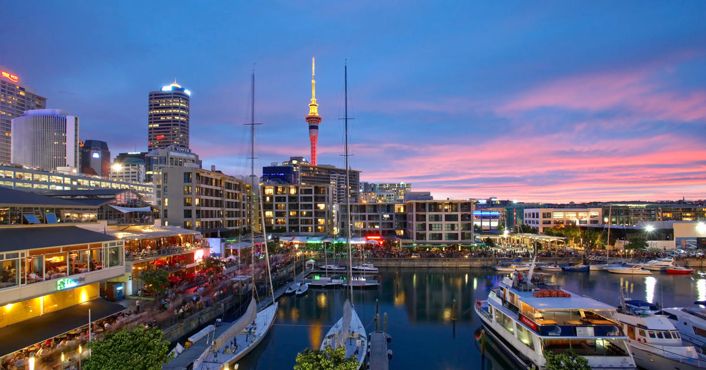
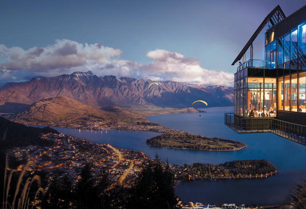
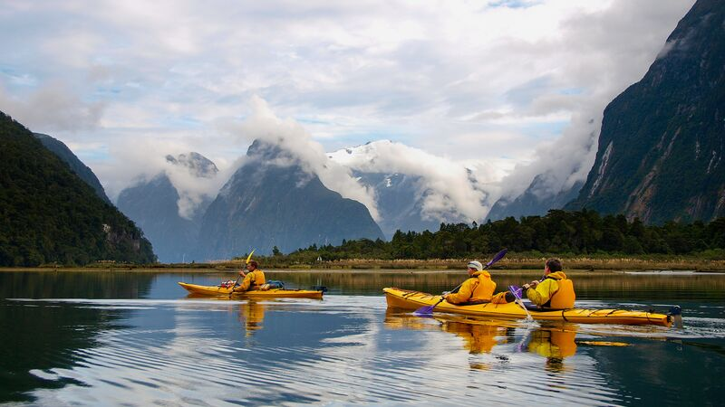
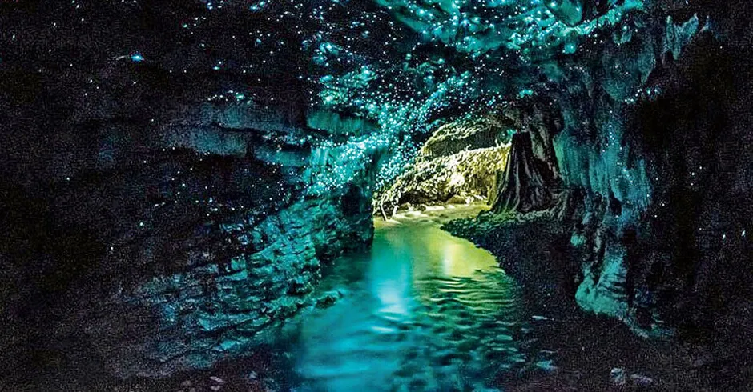
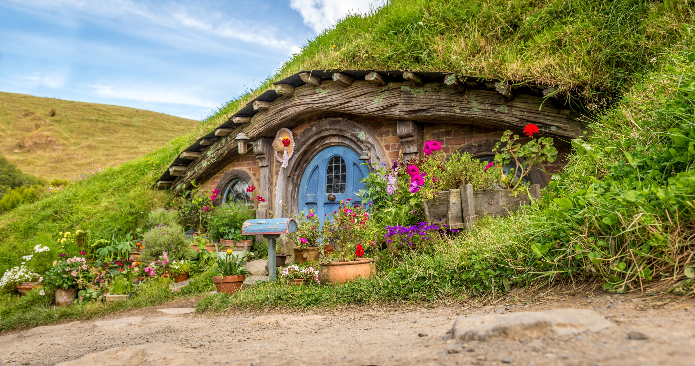

The place for filming "The Lord of the Rings" and "The Hobbit", ever since then I wanted to visit New Zealand. The country has spectacular sceneries that I would never want to leave if I have been given the chance to stay. Their snow-capped mountains, large lakes, and breath-taking sunsets are the things that I would love to witness upon visiting the place. I would also love to go on a bus while exploring the beautiful scenery of the country or sail on a boat while looking over at the Bay of Islands then go hiking on the island trails of the country. The greatest thing that I would love when I visit this place is that I would get to see by boat ride the Waitomo Caves, naturally illuminated by hundreds of glow worms.
Bay of Islands
Auckland
Queenstown
Milford Sound
Waitomo Glowworm Caves
Matamata